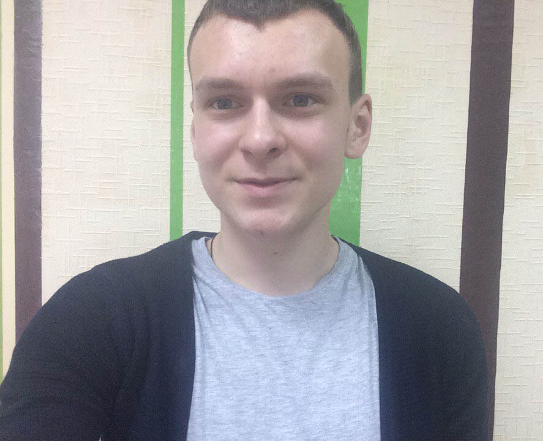

Наша команда

Никулин Алексей
Директор
+7 (951) 648-31-85
Сорокина Наталья
Наставник
+7 (951) 648-31-85
Инесса Шеховцова
Техник
+7 (951) 648-31-85
Турчанинова Анастасия
Проектировщик
+7 (951) 648-31-85
Михаил Никифоров
Техник
+7 (951) 648-31-85
Соломенцева Наталья
Техник
+7 (951) 648-31-85
Корпачева Олеся
Техник
+7 (951) 648-31-85

Гладских Анастасия
Проектировщик
+7 (951) 648-31-85